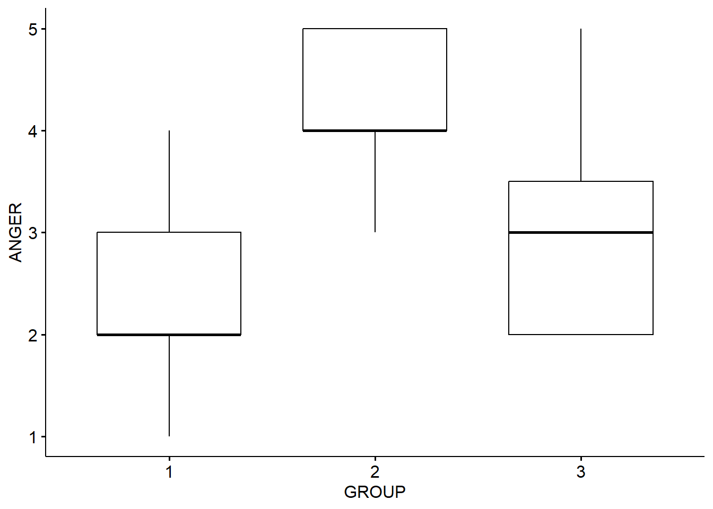
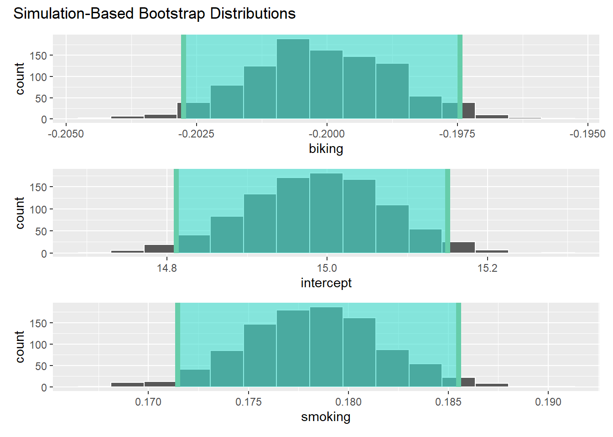
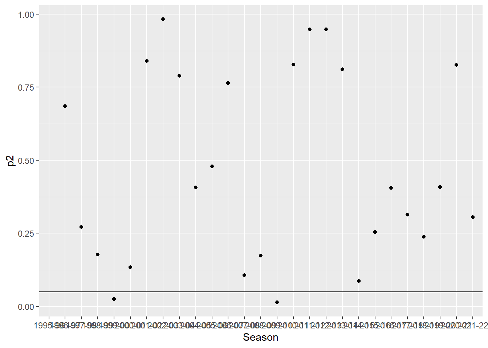

Chapter 7 Statistical Hypothesis Testing - The Classical Approach
This lesson contains some (re)worked examples from earlier sessions, focusing specifically on the hypothesis testing aspect of them.
7.1 Premier League Goals and the Poisson Distribution
In this section, we are not really worried about the actual goals or anything like that. What we are concerned about is formally testing the hypothesis that Premier League goals per game actually do follow a Poisson distribution. To do this, we will use what is called a chi-square test, which uses the chi-square statistic.
Chi-square is a fantastically versatile statistic, which is often used to compare tables of observations. Commonly, we compare a table of observed events with a table of events that we would expect if the null hypothesis were true in the population. The chi-square value is the measure of the difference between observed and expected counts in the table. We can use it here to compare the amount of goals we actually did observe in the 21-22 season, with those that we would expect to observe if the goals per game really do follow a Poisson distribution.
Again, much of the idea and code for this section comes from: https://bookdown.org/theqdata/honors_thesis/goal-scoring-and-the-poisson-process.html
The data comes from: https://www.football-data.co.uk/englandm.php and is the EPL results for 21-22 Season, with a new column of Total Goals (TOTG) created by me in Excel.
## # A tibble: 6 × 107
## Div Date Time HomeTeam AwayTeam FTHG FTAG
## <chr> <dttm> <dttm> <chr> <chr> <dbl> <dbl>
## 1 E0 2021-08-13 00:00:00 1899-12-31 20:00:00 Brentford Arsenal 2 0
## 2 E0 2021-08-14 00:00:00 1899-12-31 12:30:00 Man United Leeds 5 1
## 3 E0 2021-08-14 00:00:00 1899-12-31 15:00:00 Burnley Brighton 1 2
## 4 E0 2021-08-14 00:00:00 1899-12-31 15:00:00 Chelsea Crystal … 3 0
## 5 E0 2021-08-14 00:00:00 1899-12-31 15:00:00 Everton Southamp… 3 1
## 6 E0 2021-08-14 00:00:00 1899-12-31 15:00:00 Leicester Wolves 1 0
## # ℹ 100 more variables: TOTG <dbl>, FTR <chr>, HTHG <dbl>, HTAG <dbl>,
## # HTR <chr>, Referee <chr>, HS <dbl>, AS <dbl>, HST <dbl>, AST <dbl>,
## # HF <dbl>, AF <dbl>, HC <dbl>, AC <dbl>, HY <dbl>, AY <dbl>, HR <dbl>,
## # AR <dbl>, B365H <dbl>, B365D <dbl>, B365A <dbl>, BWH <dbl>, BWD <dbl>,
## # BWA <dbl>, IWH <dbl>, IWD <dbl>, IWA <dbl>, PSH <dbl>, PSD <dbl>,
## # PSA <dbl>, WHH <dbl>, WHD <dbl>, WHA <dbl>, VCH <dbl>, VCD <dbl>,
## # VCA <dbl>, MaxH <dbl>, MaxD <dbl>, MaxA <dbl>, AvgH <dbl>, AvgD <dbl>, …## Length Class Mode
## 380 character characterThe above is a quick way of calculating / checking the total number of games if you don’t know already.
## Min. 1st Qu. Median Mean 3rd Qu. Max.
## 0.000 2.000 3.000 2.818 4.000 9.000## [1] 1071First, let’s create a table of all the matches with different numbers of goals, just as we did in Lesson 6.
## # A tibble: 9 × 2
## TOTG ActualMatches
## <dbl> <int>
## 1 0 22
## 2 1 65
## 3 2 88
## 4 3 81
## 5 4 60
## 6 5 43
## 7 6 17
## 8 7 3
## 9 9 1Here, we have a problem. The chi-square test has a condition that the expected values in every column will be greater than 5, and as we go down the Poisson probabilities (i.e. for higher total goals), it is clear that this will start to become a problem for us.
The solution is simple, we combine the numbers for larger numbers of goals into a single ‘x and above’ variable. Here, let’s do it for 6 goals and above.
To do so, we first need to create a new table, where the values for 6 and above are combined into a new row.
## # A tibble: 7 × 2
## TOTG ActualMatches
## <chr> <int>
## 1 0 22
## 2 1 65
## 3 2 88
## 4 3 81
## 5 4 60
## 6 5 43
## 7 6 or more 21Now we can create the Poisson distribution for the relevant mean, which means we first need to create the stats…
## min Q1 median Q3 max mean sd n missing
## 0 2 3 4 9 2.818421 1.626359 380 0Below is some code which will help us to create the distributions and also check them.
## [1] 2.818421## [1] 2.645042As we saw in Lesson 7, while for a Poisson distribution these should be exactly the same, we decided that they were good enough to be going on with.
So, let’s actually check this formally with the Chi-square test.
We do so by first creating a table of the Poisson probabilities for x or fewer goals, for the Poisson with a mean of 2.818 (i.e. the variable MeanGoals)
## PoisProb
## 1 0.05970013
## 2 0.16826011
## 3 0.23711392
## 4 0.22276228
## 5 0.15695948
## 6 0.08847558
## 7 0.04156024This allows us to make some predictions of what we could expect.
Remembering again that there are 380 games in a season, we can see that there is a 0.16% chance of seeing 4 goals in a game, which equates to 380 x 0.16 = 60.8 games we would expect to see in a season with 4 goals.
We can check this out by creating a new table comparing actual with predicted values…
## TOTG ActualMatches PoisProb ExpectedMatches
## 1 0 22 0.05970013 23
## 2 1 65 0.16826011 64
## 3 2 88 0.23711392 90
## 4 3 81 0.22276228 85
## 5 4 60 0.15695948 60
## 6 5 43 0.08847558 34
## 7 6 or more 21 0.04156024 16This looks quite frighteningly close up until you get to the 5 row. It will be interesting to see how we go with a formal chi-square test.
##
## Chi-squared test for given probabilities
##
## data: NewGoalsTable$ActualMatches
## X-squared = 4.2244, df = 6, p-value = 0.6463The P-value here is actually 0.64. This suggests that there is not a significant difference between the distribution of the actual goals, and that which would be expected if they did follow a Poisson distribution.
7.2 Correlation Significance Tests
Here, we revisit our correlation between GDP per capita, and Happiness metrics, which I pulled from Our Word in Data:
## Country Happiness GDPpc Pop
## Length:249 Min. :2.400 Min. : 731 Min. :8.090e+02
## Class :character 1st Qu.:4.670 1st Qu.: 4917 1st Qu.:4.153e+05
## Mode :character Median :5.530 Median : 12655 Median :5.596e+06
## Mean :5.492 Mean : 20464 Mean :5.918e+07
## 3rd Qu.:6.260 3rd Qu.: 30100 3rd Qu.:2.421e+07
## Max. :7.820 Max. :112557 Max. :4.663e+09
## NA's :96 NA's :52 NA's :7## # A tibble: 6 × 4
## Country Happiness GDPpc Pop
## <chr> <dbl> <dbl> <dbl>
## 1 Afghanistan 2.4 1971 38972236
## 2 Albania 5.2 13192 2866850
## 3 Algeria 5.12 10735 43451668
## 4 American Samoa NA NA 46216
## 5 Andorra NA NA 77723
## 6 Angola NA 6110 33428490Let’s not worry about plotting the data, and go straight to the correlation:
##
## Pearson's product-moment correlation
##
## data: x and y
## t = 13.502, df = 146, p-value < 2.2e-16
## alternative hypothesis: true correlation is not equal to 0
## 95 percent confidence interval:
## 0.6636288 0.8092331
## sample estimates:
## cor
## 0.745184Here are our results. The estimate is a correlation, and we test that using the t statistic. The t-value is simply the estimate divided by the standard error (which we can’t see in this output), and is interpreted essentially as ‘how far from 0 is the estimate, in standard errors’.
The p-value for t is very very small, and obviously less than 0.05.
7.3 Regression Significance Tests
The process to asses the significance of regression estimates is very very similar to that for correlations. Let’s revisit the heart disease data from: https://www.scribbr.com/statistics/linear-regression-in-r/
## ...1 biking smoking heart.disease
## Min. : 1.0 Min. : 1.119 Min. : 0.5259 Min. : 0.5519
## 1st Qu.:125.2 1st Qu.:20.205 1st Qu.: 8.2798 1st Qu.: 6.5137
## Median :249.5 Median :35.824 Median :15.8146 Median :10.3853
## Mean :249.5 Mean :37.788 Mean :15.4350 Mean :10.1745
## 3rd Qu.:373.8 3rd Qu.:57.853 3rd Qu.:22.5689 3rd Qu.:13.7240
## Max. :498.0 Max. :74.907 Max. :29.9467 Max. :20.4535## # A tibble: 6 × 4
## ...1 biking smoking heart.disease
## <dbl> <dbl> <dbl> <dbl>
## 1 1 30.8 10.9 11.8
## 2 2 65.1 2.22 2.85
## 3 3 1.96 17.6 17.2
## 4 4 44.8 2.80 6.82
## 5 5 69.4 16.0 4.06
## 6 6 54.4 29.3 9.55Let’s go straight the the multiple regression model.
##
## Call:
## lm(formula = heart.disease ~ biking + smoking, data = Heart)
##
## Residuals:
## Min 1Q Median 3Q Max
## -2.1789 -0.4463 0.0362 0.4422 1.9331
##
## Coefficients:
## Estimate Std. Error t value Pr(>|t|)
## (Intercept) 14.984658 0.080137 186.99 <2e-16 ***
## biking -0.200133 0.001366 -146.53 <2e-16 ***
## smoking 0.178334 0.003539 50.39 <2e-16 ***
## ---
## Signif. codes: 0 '***' 0.001 '**' 0.01 '*' 0.05 '.' 0.1 ' ' 1
##
## Residual standard error: 0.654 on 495 degrees of freedom
## Multiple R-squared: 0.9796, Adjusted R-squared: 0.9795
## F-statistic: 1.19e+04 on 2 and 495 DF, p-value: < 2.2e-16We interpret these just as we did the correlation significance tests.
The t-value is large, and the p-value (two-tailed) is small.
Interestingly, R gives ‘stars’ for the different levels of significance, so to some extent they are doing some decision making for you.
7.4 ANOVA
Here, I’ll demonstrate the basic application of ANOVA on the simple 3-group case of the Ed Sheeran Study:
## # A tibble: 6 × 3
## ID GROUP ANGER
## <dbl> <dbl> <dbl>
## 1 1 1 2
## 2 2 2 5
## 3 3 1 2
## 4 4 3 3
## 5 5 2 4
## 6 6 3 2We need to tell R that GROUP is a factor variable not a numeric one:
Check it worked:
| Name | ED |
| Number of rows | 45 |
| Number of columns | 3 |
| _______________________ | |
| Column type frequency: | |
| factor | 1 |
| numeric | 2 |
| ________________________ | |
| Group variables | None |
Variable type: factor
| skim_variable | n_missing | complete_rate | ordered | n_unique | top_counts |
|---|---|---|---|---|---|
| GROUP | 0 | 1 | FALSE | 3 | 1: 15, 2: 15, 3: 15 |
Variable type: numeric
| skim_variable | n_missing | complete_rate | mean | sd | p0 | p25 | p50 | p75 | p100 | hist |
|---|---|---|---|---|---|---|---|---|---|---|
| ID | 0 | 1 | 23.00 | 13.13 | 1 | 12 | 23 | 34 | 45 | ▇▇▇▇▇ |
| ANGER | 0 | 1 | 3.22 | 1.17 | 1 | 2 | 3 | 4 | 5 | ▁▇▇▆▅ |
Let’s create a quick table of the group means
## # A tibble: 3 × 5
## GROUP variable n mean sd
## <fct> <fct> <dbl> <dbl> <dbl>
## 1 1 ANGER 15 2.33 0.816
## 2 2 ANGER 15 4.27 0.704
## 3 3 ANGER 15 3.07 1.03And now visualize that in a boxplot:

Hmmm….
Let’s run an ANOVA (we’re using the rstatix package here not Base R)
Much of the following is drawn from: https://www.datanovia.com/en/lessons/anova-in-r/
## ANOVA Table (type II tests)
##
## Effect DFn DFd F p p<.05 ges
## 1 GROUP 2 42 19.235 1.17e-06 * 0.478Results here suggest there is a significant effect (p-value is very small) rstatix also gives us an ‘effect size’ measure (ges, generalized eta-squared) which is also useful to us and suggests the effect is quite large. This can be interpreted similarly to a regression coefficient (which is also an effect size measure), and is the amount of variance in the dependent variable (Anger) that is explained by group membership.
However, ANOVA only tests the ‘general effect’ of the treatment / group. We don’t know whether this is because of the difference between all of the groups, or only some. E.g., is it that there is an effect of music in general (i.e. between Control and Ed, and Control and Music, but not between Ed and Music), or that Ed specifically is anger-inducing (in whcih case we would see an effect between Ed and Music, and Ed and Control, and not between Music and Control).
We can investigate this using Post-Hoc tests, which compare the individual groups. This has the potential for a multiple comparisons problem, which we will need to deal with.
Let’s take a look back to the slide deck…
## # A tibble: 3 × 9
## term group1 group2 null.value estimate conf.low conf.high p.adj
## * <chr> <chr> <chr> <dbl> <dbl> <dbl> <dbl> <dbl>
## 1 GROUP 1 2 0 1.93 1.17 2.70 0.000000734
## 2 GROUP 1 3 0 0.733 -0.0313 1.50 0.0625
## 3 GROUP 2 3 0 -1.2 -1.96 -0.435 0.00126
## # ℹ 1 more variable: p.adj.signif <chr>We can actually plot these results in a really effective way:

This very clearly tells us that it is the Ed Sheeran group (2)that is driving these results, and there isn’t much to choose between the control group, and the ‘music’ group.
Now, there are many other things that if we were doing ANOVA that we would also look to deal with - such as the various assumptions required of ANOVA, and so forth. But, they are beyond our scope in this class. Suffice to say that this has only scratched the surface of ANOVA so far.
7.5 Rate of Change in Football Goals per Season - Bonferroni Correction?
Here, I’m using data from https://www.footballhistory.org/league/premier-league-statistics.html
I hand-entered this into a spreadsheet, and calculated the additional stuff.
## # A tibble: 6 × 7
## Season Games Goals GPG SE Lower95CI Upper95CI
## <chr> <dbl> <dbl> <dbl> <dbl> <dbl> <dbl>
## 1 1995-96 380 988 2.6 31.4 926. 1050.
## 2 1996-97 380 970 2.55 31.1 909. 1031.
## 3 1997-98 380 1019 2.68 31.9 956. 1082.
## 4 1998-99 380 959 2.52 31.0 898. 1020.
## 5 1999-00 380 1060 2.79 32.6 996. 1124.
## 6 2000-01 380 992 2.61 31.5 930. 1054.You can see here I have calculated the standard errors from the yearly goal totals (which represent that year’s underlying rate of goal occurrence), then used that to calculate the 95% Confidence Interval limits
We can use these to create a nifty chart with the error bars…drawing from the code used by Spiegelhalter in his book for Figure 9.4 available on his github (linked in the code).

From this chart, and looking at the data itself, we can see that the 95% Intervals overlap, so it is hard to conclude that the underlying rate of goals has changed significantly year on year. Yes, even in the pandemic.
Remember though, the ONS suggest that it is over-stringent to rely on error bar overlap, so we can also use z-tests to directly test the assumption that the change is zero.
Rather than just use a z-value cutoff of 1.96 as we did last time, in the next data file, I have calculated the p-value (2 tailed as we do not hypothesize a direction for the difference) for the z-scores for the difference between each season, year-on-year.
## # A tibble: 6 × 11
## Season Games Goals GPG SE Lower95CI Upper95CI Change Z negged
## <chr> <dbl> <dbl> <dbl> <dbl> <dbl> <dbl> <dbl> <dbl> <dbl>
## 1 1995-96 380 988 2.6 31.4 926. 1050. NA NA NA
## 2 1996-97 380 970 2.55 31.1 909. 1031. -18 -0.407 -0.407
## 3 1997-98 380 1019 2.68 31.9 956. 1082. 49 1.10 -1.10
## 4 1998-99 380 959 2.52 31.0 898. 1020. -60 -1.35 -1.35
## 5 1999-00 380 1060 2.79 32.6 996. 1124. 101 2.25 -2.25
## 6 2000-01 380 992 2.61 31.5 930. 1054. -68 -1.50 -1.50
## # ℹ 1 more variable: p2 <dbl>Here, we can plot the p-values (2-tailed), and again we see (just like with the z-tests) that the same two seasons have significant differences.

We can see that the 1999-2000 season, and the 2009-10 seasons have p values less than 0.05
The question is are we suffering from the multiple comparisons problem? Should we correct for it? It’s hard to say actually. Of course, we are indeed running multiple tests, 29 in fact. So, the chance of a false positive is quite high, if the null was true in all cases. The Bonferroni correction would immediately reduce this, but at the cost of making none of our tests significant.
Further, the basis of these corrections is that the null hypothesis is true. What if it is the alternative hypothesis (that is, the H of an effect existing) that is true? In such cases, there can of course be no false positives. Here, you are increasing the chances of a false negative by reducing the chances of a false positive. So, what are the potential costs of each of these mistakes?
For example, Thomas Perneger’s 1998 paper in the BMJ is scathing about the Bonferroni adjustment. Take a look at https://www.bmj.com/content/316/7139/1236.full
Mind you, I am not saying that’s the final word, just that there are multiple perspectives on the issues!
It’s never as simple as it seems when making statistical decisions, is it?
7.6 Statistical Power
Different types of analysis and research design require different types of power calculation. In R, we can use the pwr package to calculate quite a few.
Let’s calculate the required sample size for the Ed Sheeran study we conducted earlier. Really, we should have done this before collecting data, but it’s a nice example to do it post hoc.
We don’t need the data, just the parameters of the experiment and analysis design.
So, we had 3 groups, and used ANOVA
Let’s set a significance of 0.05, a required power of 0.8, and assume the effect size is moderate (say 0.25)
##
## Balanced one-way analysis of variance power calculation
##
## k = 3
## n = 52.3966
## f = 0.25
## sig.level = 0.05
## power = 0.8
##
## NOTE: n is number in each groupSo, we really wanted to have around 50 in each group to have an 80% chance of detecting a moderate effect presuming the null was true.
You can see that my study (with only 15 in each group) was rather underpowered. However, if I had increased the effect size in the calculation to 0.5 (close to what the experiment suggested) this would have given me a result for n closer to what I actually used. However, you’d have to be VERY confident in the size of your likely effect to actually do that I think.